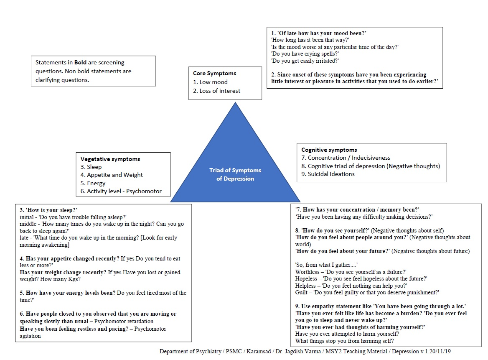
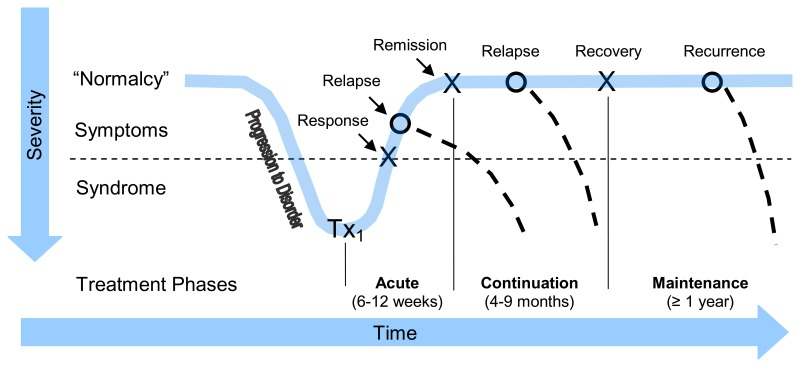

Chapter 5: The patient who is depressed
Depression is a common disorder, yet detection, treatment and referral rates in primary care are low. Many patients with depression also have a medical condition, whose outcome can worsen if the depression is not treated. Given the recurring nature of depression, clinicians must know how to diagnose and manage depression, which includes providing follow-up and teaching patients self-management.
Screening, assessment and diagnosis
Patients with the following risk factors may be screened for major depressive episode (MDE):
- Chronic insomnia or fatigue
- Unexplained somatic symptoms
- Chronic medical illness
- Recent cardiovascular event (myocardial infarction, stroke)
- Recent trauma (psychological or physical)
- Other psychiatric disorder
- Family history of mood disorder
- Extensive use of the medical system ("thick chart" syndrome)
Two-question quick screen for core symptoms of depression
Use the two-question "quick screen" for patients with risk factors for major depressive episode (MDE). Ask:
- Have you felt sad or depressed?
- Have you lost interest in previously pleasurable activities?
Answering "yes" to either question indicates the need for a more detailed assessment. Making a diagnosis and assessing severity
Summary of DSM-5 MDE criteria - How to ask for symptoms if screens on above questions
 |
Rule out bipolar disorder by asking for history of previous manic or hypomanic episodes
Depression : Differential Diagnosis

Organic conditions - Many medical illnesses can cause depressive symptoms, but they generally have other symptoms and signs associated with the primary disease. Unless indicated by history and/or physical examination, screening blood tests need only include complete blood count and thyroid stimulating hormone test (to rule out anaemia and thyroid disease). Patients who take certain medications or who use alcohol or other drugs can present with depressive symptoms.
Major Depressive Episode = 5 / 9 [at-least 1 core symptom] + all three D’s
Three D’s
D – Duration – at-least x 2 weeks [symptoms persist almost every day]
D – Distress or Dysfunction – Should cause impairment in social, occupational or other areas of functioning [effect of illness on life]
D – Differential [rule out]
a. not due direct effect of a substance or another medical condition
b. not better explained by schizoaffective disorder, schizophrenia, schizophreniform disorder, delusional disorder, or other specified and unspecified schizophrenia spectrum and other psychotic disorders
c. no h/o manic or hypomanic episode
Persistent depressive disorder - as shown in figure above
Grief and major psychosocial stressors (adjustment disorders) - Major depressive episode (MDE) can be differentiated from bereavement by the severity of symptoms (e.g., psychosis or suicidality), the presence of anhedonia (total loss of feelings of pleasure) and the duration of impairment (longer than two months). Adjustment disorders have sub-syndromal number and severity of symptoms compared to MDE. Watchful waiting may be helpful to determine whether symptoms of adjustment disorder worsen or persist into a depressive episode.
Bipolar disorder - It is difficult to assess for hypomania because patients often do not recognize euphoric states as abnormal. Using a screening questionnaire is helpful.
Anxiety disorder - Depression is often secondary to, or co-morbid with, many anxiety disorders, especially generalized anxiety disorder, social anxiety disorder and panic disorder.
Personality disorder (especially Cluster B) - Personality disorders usually present with lifelong patterns of mood instability.
What is expected of a primary care clinician
- Diagnose and develop a treatment plan.
- Assess suicide risk.
- Monitor response and outcome using rating scales:
- The Patient Health Questionnaire (PHQ-9) is brief and patients can complete it at home or in the waiting room. It is also useful as a diagnostic aid and to identify remission status.
- Full remission of symptoms is an important goal for acute and maintenance treatment.
- Coach self-management and use problem-solving therapy techniques.
- Manage medications:
- Be familiar with at least two classes of antidepressants.
When to refer to a specialist
- Complicating co-morbidity (substance abuse, personality disorder, anxiety disorder)
- Severe presentation (serious suicidality, psychosis, bipolar disorder, especially bipolar I, with manic episodes)
- Diagnostic clarification (bipolarity, personality disorder co-morbidity)
- Not improving with standard treatment
Treatment: Pharmacological

Acute treatment
The goals for acute treatment of depression are full remission of symptoms and return to baseline function. Remission is defined as having normal mood and minimal symptoms. It is best evaluated using a rating scale (e.g., a score within the normal range on the Patient Health Questionnaire [PHQ-9]). Antidepressant medications are first-choice treatments, especially for moderate to severe depression.
The newer antidepressants (selective serotonin reuptake inhibitors [SSRIs], bupropion, mirtazapine and venlafaxine) are first-line medications that are more tolerable and safe than tricyclic antidepressants (TCAs) and monoamine oxidase inhibitors (MAOIs).
Maintenance treatment
The goal for maintenance treatment of depression is preventing relapse and recurrence.
- Except for those with risk factors, patients should continue on antidepressants for at least four to six months after achieving remission.
- Patients with risk factors (chronic, recurrent, severe or difficult-to-treat depressive episodes) should continue on antidepressants for at least two years. Some patients will require lifetime treatment.
Prescribing an antidepressant medication
Usually there is not one definite choice of antidepressant for any given patient because there is so much individual variability in efficacy and side-effects. The choice is based primarily on individual profiles of efficacy, tolerability and anxiety indications
Bibliography
1. Portico network - Psychiatry in Primary Care Toolkit
2. Black Book - University of Calgary
3. Gartlehner G, Gaynes BN, Amick HR, et al. Nonpharmacological Versus Pharmacological Treatments for Adult Patients With Major Depressive Disorder [Internet]. Rockville (MD): Agency for Healthcare Research and Quality (US); 2015 Dec. (Comparative Effectiveness Reviews, No. 161.) Figure 1, Phases of treatment for major depression. Available from: https://www.ncbi.nlm.nih.gov/books/NBK338234/figure/introduction.f1/
4. Synopsis of Psychiatry 11e.
Created with the Personal Edition of HelpNDoc: Easily create iPhone documentation